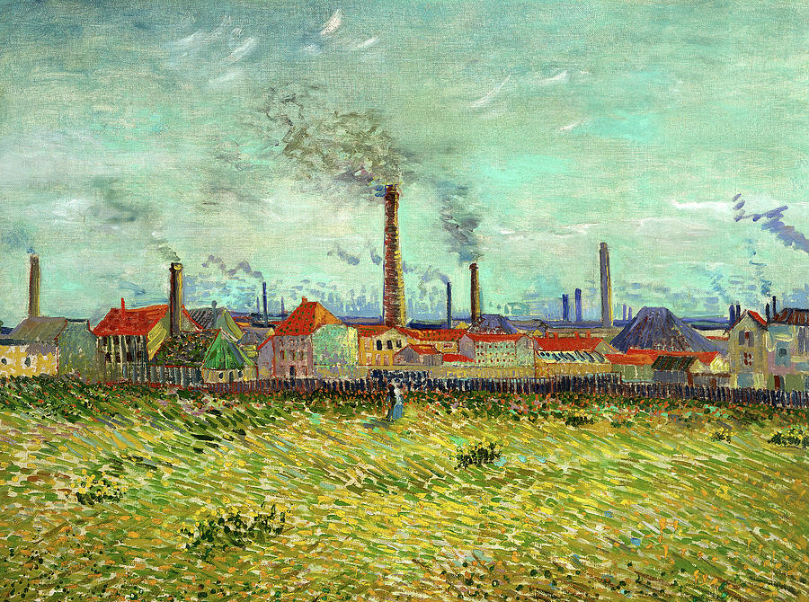
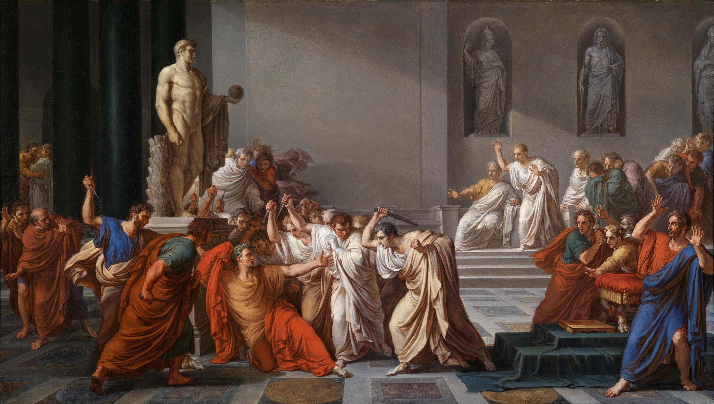
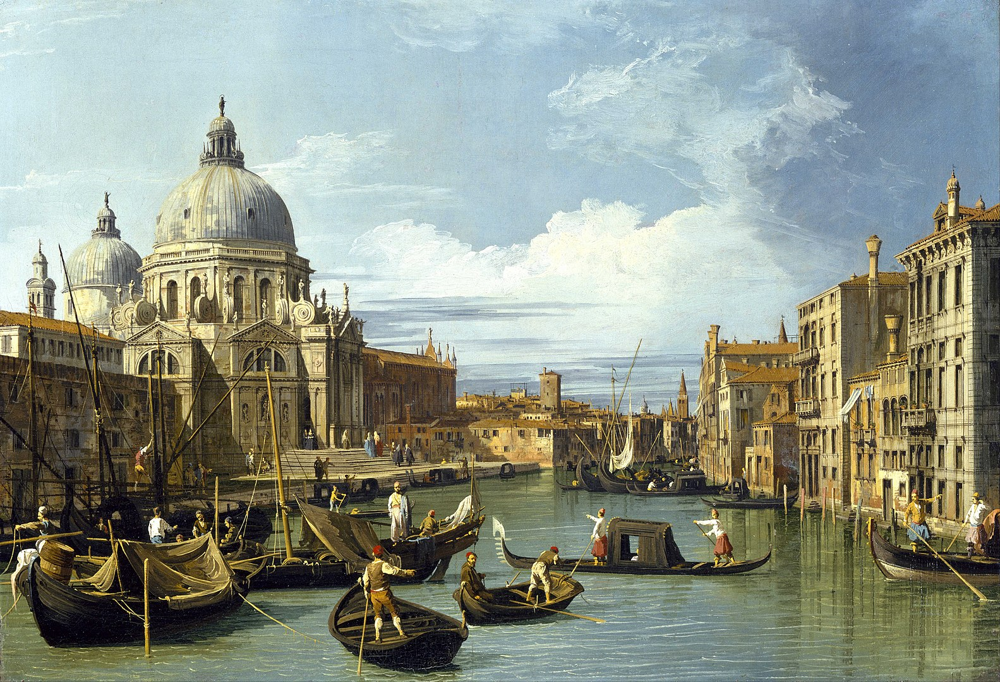
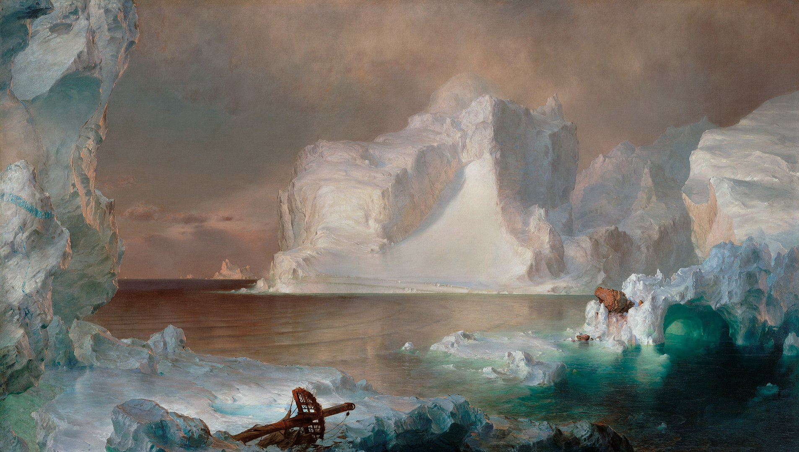

Art Appreciation

Series - French Revolution in Art
Series - French Revolution in Art

Exhibit - Van Gogh and the Avant-Garde: The Modern Landscape

A Creek in St. Thomas - Camille Pissarro

Death of Julius Caesar - Vincenzo Camuccini

The Entrance to the Grand Canal - Canaleto

The Ballet Class - Edgar Degas

Girl With Ballon - Banksy

Bridge with Water Lillies - Claude Monet

The Burghers of Calais - Auguste Rodin

Esther Before Ahasuerus - Artemisia Gentileschi

A Sunday Afternoon on the Grand Jatte - George Seurat

Great Wave off Kanagawa - Hokusai

The Icebergs - Frederic Edwin Church

The Human Condition - Rene Magritte

Impression, sunrise - Claude Monet

Self Portrait Hesitating - Angelica Kauffman

The Kiss - Gustav Klimt
Liberty Leading the People - Eugene Delacroix

Portrait of Madame X - John Singer Sargent

The Death of Marat - Jacques Louis David

The Persistence of Memory - Salvador Dali

Composition with Red, Blue, and Yellow - Piet Mondrian

Mount Sainte Victoire - Paul Cezanne

The Nightwatch - Rembrant

The Oxbow - Thomas Cole

Girl with the Pearl Earring - Johannes Vermeer

The School of Athens - Raphael

Among the Sierra Nevada Mountains - Albert Bierstadt

The Death of Socrates - Jacques Louis David

Son of Man - Rene Magritte

The Calling of Saint Matthew - Caravaggio

In the Sultan's Palace - Benjamin Constant

Suprematism - Kazmir Malevich

The Swing - Jean-Honoré Fragonard

The Treachery of Images - Rene Magritte

The Wander Above the Sea of Fog - Claude David Friedrich

Iridescent Interpenetration No.13 - Giacomo Balla

Disks of Newton - Frantisek Kupka

Big Painting No. 6 - Roy Lichetenstein

LOVE - Robert Indiana

Composition VI - Wassily Kandinsky

Kindred Spirits - Asher B. Durand

The Automat - Edward Hopper